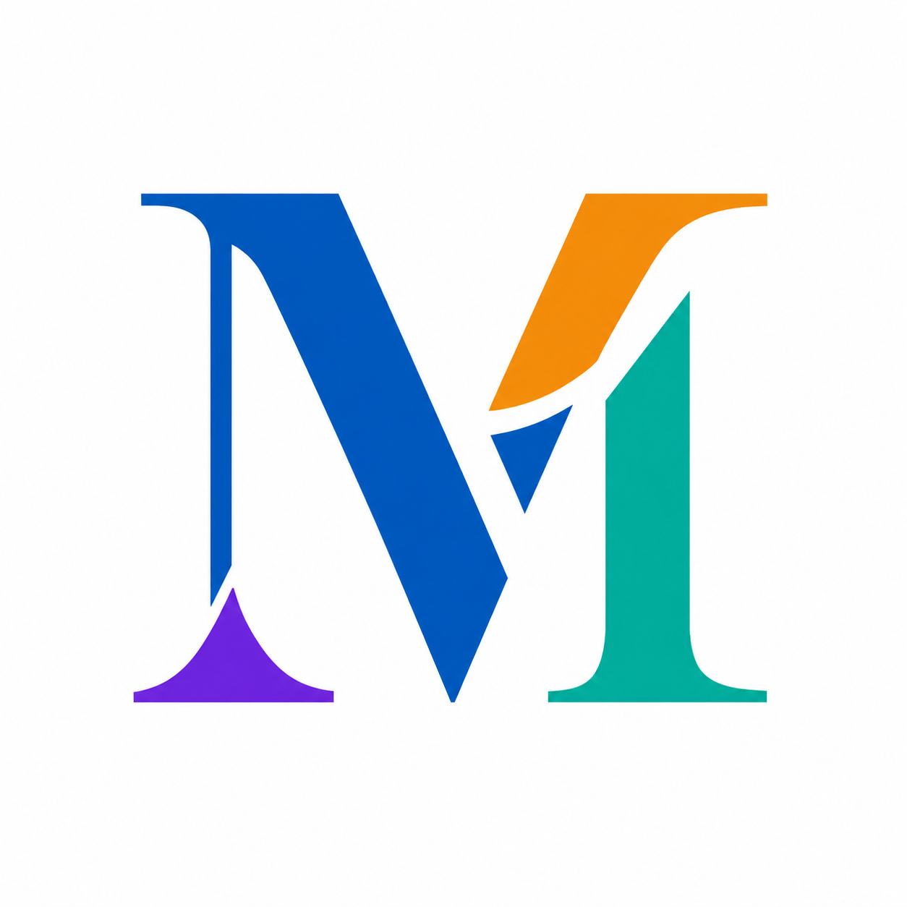

Le guide de référence pour préserver une identité cohérente, premium, pédagogique et orientée croissance.
Maîtrise le digital, accélère ta croissance.
Nom de marque : Max-Morrys
Signature : Maîtrise le digital, accélère ta croissance.
Positionnement : plateforme d'apprentissage, de contenus, de communauté et d'accompagnement pour aider les entrepreneurs, freelances, créateurs et professionnels d'Afrique francophone à transformer leurs compétences digitales en résultats concrets.
Aider les entrepreneurs et professionnels à maîtriser les leviers du digital - marketing, contenu, IA, automatisation, communauté et acquisition - pour développer leur activité avec méthode.
Devenir une référence francophone du digital pratique en Afrique de l'Ouest : une marque utile, pédagogique, premium et orientée résultats.
Des méthodes claires, des contenus actionnables, une communauté engagée et un accompagnement stratégique pour passer de la connaissance à la croissance.
| Pilier | Rôle | Message clé |
|---|---|---|
| Formations | Transmettre une méthode structurée | Apprendre des compétences utiles et directement applicables |
| Contenus | Inspirer et éduquer régulièrement | Comprendre le digital avec des exemples concrets |
| Communauté | Créer l'entraide et le réseau | Grandir avec des pairs qui passent à l'action |
| IA | Accélérer l'exécution | Utiliser l'intelligence artificielle comme levier de productivité |
| Accompagnement | Passer au niveau supérieur | Bénéficier de conseils personnalisés pour des résultats durables |
Le logo principal associe le monogramme M à la signature Max-Morrys. Il doit être utilisé prioritairement sur les supports institutionnels : site web, landing pages, couvertures, documents, présentations et vidéos de marque.
Le monogramme représente deux M stylisés : un symbole de structure, de stabilité et d'ambition. Les formes dynamiques évoquent la progression, l'élévation, la croissance et la transformation digitale.
La zone de protection minimale autour du logo correspond à la hauteur du monogramme. Aucun texte, pictogramme, bordure ou élément décoratif ne doit pénétrer dans cet espace.
| Couleur | Hex | Rôle principal |
|---|---|---|
| Bleu profond | #072B49 | Fonds premium, headers, signatures, zones institutionnelles |
| Bleu principal | #0074C5 | Identité, boutons, liens, accents structurants |
| Bleu vif | #0C93E7 | Dynamisme, technologie, graphiques, éléments de croissance |
| Bleu très clair | #F0F7FF | Fonds légers, cartes, surfaces respirantes |
| Orange | #ED9516 | Energie, appels à l'action, différenciation |
| Violet | #8A3DE8 | Communauté, créativité, progression |
| Turquoise | #08BDAA | IA, innovation, automatisation, productivité |
| Corail | #FA5A2E | Urgence maîtrisée, highlights, annonces importantes |
| Vert croissance | #22C55E | Succès, validation, progression, résultats |
Merriweather Display ou équivalent serif premium. À utiliser pour les grands titres, les accroches de marque, les couvertures et les messages institutionnels.
Inter ou équivalent sans-serif moderne. À utiliser pour les paragraphes, l'interface, les boutons, les légendes, les tableaux et les contenus pédagogiques.
| Niveau | Usage | Taille recommandée | Interligne | Poids |
|---|---|---|---|---|
| H1 | Titre principal | 56 px | 64 px | Bold |
| H2 | Sous-titre / section forte | 36 px | 44 px | Bold |
| H3 | Titre de bloc | 24 px | 32 px | SemiBold |
| Body | Texte courant | 16 px | 24 px | Regular |
| Caption | Notes et légendes | 12 px | 16 px | Regular |
| Button | CTA | 14 px | 20 px | SemiBold |
Les icônes doivent être simples, lisibles et cohérentes. Le style recommandé est un système outline à traits nets, coins légèrement arrondis et couleurs d'accent par catégorie.
| Icône | Couleur | Usage |
|---|---|---|
| Formations | Bleu principal | cours, modules, apprentissage, pédagogie |
| Contenus | Orange | vidéos, podcasts, articles, formats éditoriaux |
| Communauté | Violet | groupe, entraide, live, interactions |
| IA | Turquoise | assistants, automatisation, prompts, outils |
| Accompagnement | Orange | coaching, conseil, suivi, mentorat |
Règles : trait régulier, fond transparent, espace interne suffisant, pas de détails inutiles, lisibilité à petite taille.
Les portraits doivent exprimer confiance, compétence et proximité. Le sujet est cadré en plan moyen ou plan serré, posture naturelle, regard engageant, lumière propre, arrière-plan clair ou technologique.
Utiliser des fonds digitaux subtils : grilles, lignes de croissance, graphiques, interfaces, motifs de données. Les arrière-plans ne doivent jamais voler l'attention au message.
Utiliser une grille simple et respirante : 12 colonnes pour le web, 6 colonnes pour les documents, 2 à 3 zones fortes pour les posts sociaux.
Échelle de spacing : 4 / 8 / 16 / 24 / 40 / 64 px. Les cartes et sections doivent respirer. Les messages importants ont plus d'espace autour d'eux.
Cartes blanches, coins arrondis, ombre subtile, icône en haut ou à gauche, titre court, texte descriptif, CTA discret.
Les badges servent à signaler une catégorie, un statut ou un bénéfice : IA, Formation, Nouveau, Gratuit, Live, Communauté.
Maîtriser, accélérer, structurer, apprendre, passer à l'action, croissance, résultat concret, communauté, accompagnement, méthode, automatiser, optimiser.
Promesses irréalistes, jargon inutile, formulations trop corporate, termes trop techniques non expliqués.
| Support | Objectif | Règle clé |
|---|---|---|
| Site web | Convertir et rassurer | Hero clair, preuve sociale, CTA visible |
| YouTube | Éduquer et fidéliser | Miniatures fortes, titres orientés bénéfices |
| Instagram / Facebook | Créer de la proximité | Formats courts, carrousels pédagogiques, stories |
| Crédibilité et B2B | Cas pratiques, analyses, retours d'expérience | |
| Newsletter | Relation durable | Conseils actionnables, liens utiles, CTA simple |
| Présentations | Professionnaliser l'offre | Slides aérées, peu de texte, iconographie stable |
Avant publication, chaque support doit passer par une vérification rapide :
Format recommandé :
`MM_[Canal]_[Format]_[Sujet]_[Version]_[Date]`
Exemples :
La charte Max-Morrys doit installer une marque claire, crédible et orientée croissance. Elle combine une esthétique premium, une pédagogie accessible, une identité technologique et une promesse concrète : aider les professionnels à maîtriser le digital pour accélérer leur croissance.